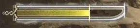
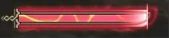

This guide was written by timmy and Mikalya.
Longsword is a weapon with plenty of mobility, chainable counters, and quick moves that are easily cancellable into each other. While previous games focused more on the counter aspect of the weapon, Wilds Longsword currently focuses on a single, short, damage loop.
This Weapon is for you if you:
The following is a list of the most commonly used moves:
Basic moves:
Important Combos:
| Sharpness | Raw Mod | Elemod |
|---|---|---|
| Purple | 1.39 | 1.25 |
| White | 1.32 | 1.15 |
| Blue | 1.2 | 1.0625 |
| Green | 1.05 | 1 |
| Yellow | 1 | 0.75 |
| Orange | 0.75 | 0.5 |
| Red | 0.5 | 0.25 |
| Fig 3.0B - Sharpness Table | ||
Longsword revolves around two main mechanics: Spirit Gauge and Spirit Levels. Using normal attacks generates Spirit Gauge, while Spirit Attacks (ZR) spend it.
Some attacks also have special interactions with Spirit Gauge. Iai Slash will generate 100% of the Spirit Gauge over 15 seconds, and Foresight Slash will consume 100% of the Spirit Gauge to counter. However, if no gauge is present, FSS will not act as a counter and instead generate 10% gauge. More info on FSS (and other counters) later.  4.0A - Spirit Gauge, Spirit Level (White)
Landing Spirit Roundslash, countering with Iai Spirit Slash, or breaking a wound with Focus Strike will give you a Spirit Level. The Spirit Levels go from White -> Yellow -> Red, and give 2/5/10% attack, respectively. Red Spirit will also change some attacks, making it very important to reach Red as quickly as possible. Below is the list of new moves:
 4.0B - Red Spirit When on Red, the Spirit Gauge works differently. It will decay over 50 seconds, and most attacks will not regenerate the bar. However, there are several attacks which will affect the gauge:
Focus Mode/Strike
Like all other weapons, we can enter Focus Mode with ZL, and press R for a small hit. If it hits a wound as shown on the left, it unleashes a strong multi-hit attack. The 2 followup hits that come after stabbing the sword can be aimed with Focus Mode to target other wounds. Each wound destroyed with Focus Strike will grant a Spirit Level. To maximize Red Gauge uptime, Focus Strike should be used right before dropping from Red to Yellow Spirit.
Another big addition was the Corrupted Mantle, which gives some attacks a weaker secondary hit. For LS, it applies to Overhead I/II, Crescent Slash, Spirit Roundslash, Spinning Crimson Slash, Crimson Slash I/II/III. Due to Mantle timers not resetting on either Quest End nor Quest Start, this will go largely ignored for the sake of this guide, as it is likely to be relegated to speedruns only.
Sneak Attack
While a monster has not spotted you and is not engaged in combat and grounded, you can approach it from behind and follow the button prompt () to use Sneak Attack, a reasonably strong attack that also grants some Spirit Gauge.
The standard opener for most monsters is to Sneak Attack -> Spirit Charge -> Spirit Roundslash -> ISS roar.
Longsword has one notable playstyle:
Crimson I + Spirit I spam.
This will revolve around getting red as quickly as possible with counters, then using this loop as much as possible on the monster. Counters are still used to maintain dps. Spirit Helmbreaker (+Spirit Release Slash) is also an option, but has niche usage.
Iai Spirit Slash
after Special Sheathe will allow you to use Iai Spirit Slash, or ISS. If successful, hitting a monster will raise the Spirit Level, add an extra hit of damage, and grant short iframes -> hyper armor. You will also be able to Special Sheathe again. However, failing to counter an attack with ISS will prevent you from doing this.
Iai Slash
after Special Sheathe will go into Iai Slash. This has hyper armor at the start and will regenerate 100% of the Spirit Gauge over 15 seconds.
Foresight Slash
+ after most attacks will use the entire Spirit Gauge and some stamina to evade and counter an attack. If successful, the return slash will refill the gauge and allow you to follow up with Spirit Roundslash. Grants 30% attack and hyper armor for 1s after a successful counter.
Foresight Whirl Slash
Foresight Whirl Slash can only be used on Red, but works like Foresight Slash. However, there is no return slash, it only uses 16% of the gauge, and will attack twice during the evasion. A successful counter can be followed with Spirit Roundslash -> Spinning Crimson Slash. Also grants 30% attack and hyper armor for 1s after a successful counter.
Spirit Charge
Holding after any attack will drain stamina to use Spirit Charge. Release will use Spirit Blade I/II/III or Spirit Roundslash depending on how long it is held. On Red Spirit only, this move grants hyper armor right after releasing .
Spirit Thrust, Spirit Helmbreaker, and Spirit Release Slash
+ will use Spirit Thrust, which grants hyper armor at the start. Hitting a monster will launch you into the air, allowing you to press to spend a Spirit Level for Spirit Helmbreaker. Using again will go into Spirit Release Slash, which will spend a Spirit Level again. SRS has hyper armor during the entire animation. Note that SHB requires at least White Spirit to perform, and SRS needs Yellow. However, you should only ever use SHB from Red anyways.
It’s worth noting that spamming SHB + SRS alone and ignoring Crimson spam is a ‘viable’ playstyle. While it falls significantly behind with Element, the difference is rather small when using Raw.
Crimson Loop
The highest sustained DPS combo in Longsword’s kit.
While in Red Spirit, from pretty much anything:
Crimson Slash I -> Spirit Blade I -> repeat
The loop is 80 MV and 2.4 elemod over 1.5 seconds. (~53.3 MV and ~1.6 elemod per second, respectively). It requires being in Red Spirit, but has virtually no startup or endlag. Each loop lasts around ~1.5s, is easily cancellable, and can be chained into Special Sheathe or FWS.
Note that Crimson I moves you ever so slightly forward, so adjust accordingly. You can use the left stick to move even further with both Crimson I and Spirit I, and Focus Mode can be used to change directions mid combo.
SHB + SRS Spirit Helmbreaker into Spirit Release Slash has 420 MV and 7.4 elemod over 6 seconds (~70 MV and ~1.23 elemod per second, respectively). This means it has more burst damage than Crimson Loop in the 6 seconds it takes to use SHB + SRS. However, if you account for the time it takes to get back to red from white, Crimson Loop outperforms SHB + SRS for extended DPS windows. There are several uses for this such as:
This section will be short due to how new the game is.
Focus Strike:
Focus Strike can be used to instantly gain back Red Gauge. Ideally, it is used just before dropping to yellow for minimum downtime.
Might Pill:
Might Pills now overwrite the buff but not the timer of Might Seeds, meaning that if you take a seed and then a pill, after the pills 20 seconds are over, Might Seed applies again. Useful at the start of a hunt for more Sneak Attack damage.
Counterstrike:
Countering, Hyper armoring and getting hit with knockback procs Counterstrike. At level 3, it gives 25 raw for 45 seconds. LS has several ways to reliably proc this which are:
Spirit Charge Cancels:
Spirit Charge is usually used only at the start of the quest after the Sneak Attack in order to get a Spirit Level during the flinch. However, Spirit Charge does have other uses. Before it was mentioned that a failed ISS would not allow you to Special Sheathe again, but this can be bypassed to some extent by holding Spirit Charge after the failed ISS then immediately using Special Sheathe. Foresight Slash can also be used to cancel Spirit Charge. This is very niche but allows you to chain counters in specific situations.
Longsword is just Dual Blades except one sword and its long lmao